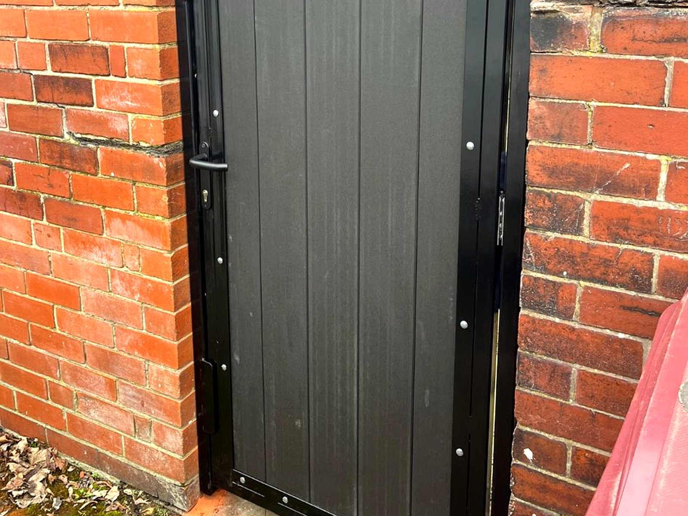

Metal Side Gates
Strong, practical side access gates made to measure for homes and businesses.
METAL & COMPOSITE GATES
We specialise in bespoke metal and composite gates across Bolton and the Northwest of England. From driveway gates to side gates, all of our work is custom fabricated and powder coated for durability and a high-quality finish.

SERVICES
We build custom gates to suit your opening, style and finish requirements, with durable powder-coated protection.
Strong, practical side access gates made to measure for homes and businesses.
Custom driveway gates built for security, kerb appeal and long-term durability.
Modern composite gate designs combining privacy, style and a clean finish.
PROJECT GALLERY
A selection of metal and composite gates completed across Bolton, Greater Manchester and surrounding areas.
WHY CHOOSE US
Every gate is built to suit your opening, fixing points and design preference.
A durable finish designed to handle daily use and the British weather.
Based in Bolton and covering Greater Manchester, Wigan, Bury, Chorley and surrounding areas.
AREAS COVERED
We regularly supply and install gates throughout Greater Manchester and nearby Northwest areas.
Tell us the gate type, approximate size and fixing details, and we can advise on the best option for your property.
ENQUIRY
Tell us what you need and we will get back to you. If you are unsure on sizes or fixing type, send what you can and we will advise.